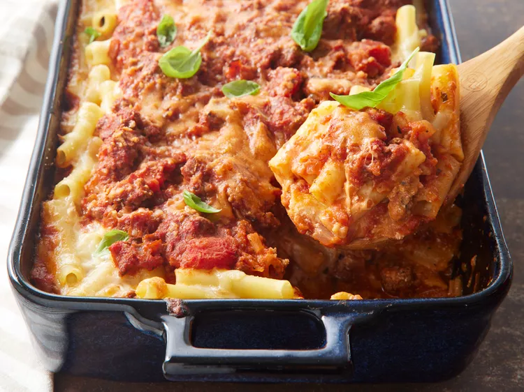

Baked Ziti

Baked Ziti is so much more than just a Bolognese pasta bake…. It’s a big, juicy baked pasta that’s loaded with flavour from a healthy dose of seasonings and topped with a generous amount of cheese. Cosy food that’s easy enough for midweek yet worthy of company.
Step 1
Gather all ingredients.
Step 2
Bring a large pot of lightly salted water to a boil. Add ziti pasta, and cook until al dente, about 8 minutes; drain.
Step 3
Meanwhile, brown ground beef and onion in a large skillet over medium heat; stir in spaghetti sauce and simmer for 15 minutes. Preheat the oven to 350 degrees F (175 degrees C). Butter a 9x13-inch baking dish.
Step 4
Spread 1/2 of the ziti in the bottom of the prepared dish.
Step 5
Top with Provolone cheese.
Step 6
Top with sour cream.

Step 7
Add 1/2 of the meat sauce, remaining ziti, mozzarella cheese, and remaining meat sauce. Top with grated Parmesan cheese.
Step 8
Bake in the preheated oven until heated through and cheeses have melted, about 30 minutes.
